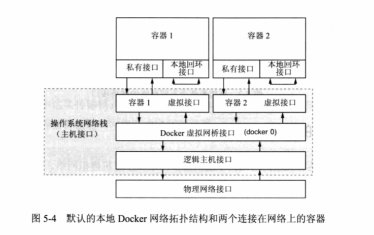
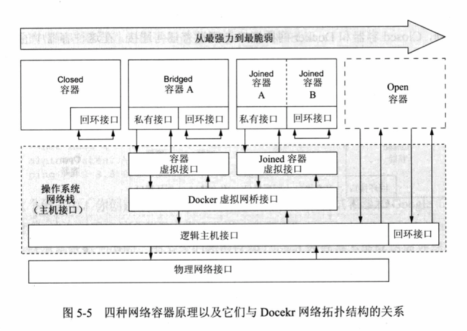
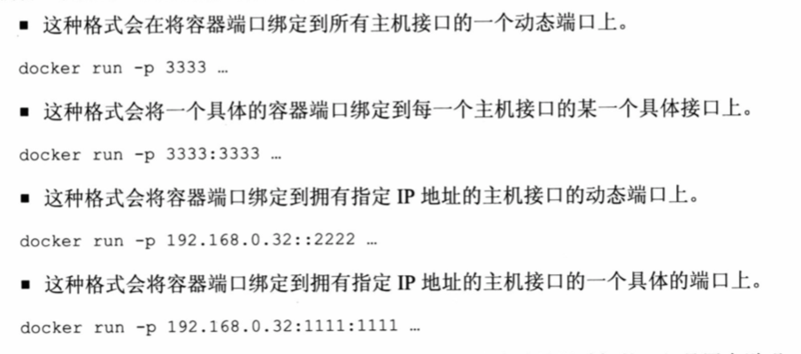
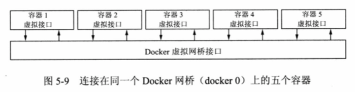
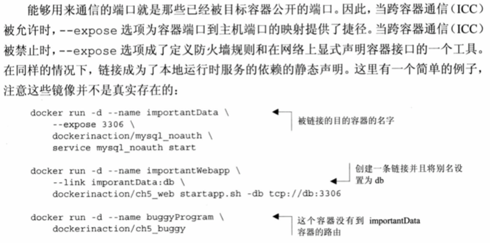

网络访问
这章学习以下内容，关注于单主机网络
- 在Docker中如何将容器连接到网络
- 创建暴露在网络上运行的容器
- 一个容器使用另外一个容器的网络软件
- 容器时如何与主机还有主机网络进行交互的。
Docker的网络
Docker关系两种类型网络：单主机虚拟网络和多主机虚拟网络。本地虚拟网络用来提供容器隔离。多主机虚拟网络构建了一个抽象的覆盖网络，在这个网络中，任何容器相对于网络上的其他容器都拥有独立的、可路由的IP地址。
本地Docker网络拓扑结构
Docker使用操作系统的底层特性构建了一个特殊的、可定制的虚拟网络拓扑结构。这个虚拟网络只在安装有Docker的机器上有效，并且它由主机上的机器和主机所连接的网络之间的路由构成。
每个容器各自拥有一个本地回环接口和一个分离的以太网接口，其中以太网接口连接着在主机命名空间上的另一个虚拟接口。这两个互联的接口在主机网络栈和每个容器的网络栈之间建立了连接。每个容器都被赋予了一个唯一的私有IP地址，从外部的网络不能直接连接到该私有IP。网络连接需要经过Docker网桥接口路由到另一网络，这个网桥接口被称为docker 0，可以吧docker 0想象成路由器，为每个容器创建的虚拟接口都会连接到docker 0，这样他们就构成一个网络。最后这个网桥接口docker 0会连接到主机所连接的网络。

使用docker命令行工具，可以自定义IP地址、网桥接口docker 0所连接的主机接口、容器之间通信的方式。Docker使用内核命名空间来创建这些私有的虚拟接口，但是命名空间本身不提供网络的隔离。网络暴露或者隔离是通过煮鸡蛋防护墙规则来实现。
Docker命令行选项提供四种网络容器原型
所有的Docker容器都要符合这四种原型中的一种，原型定义了一个容器如何与其他的本地容器、主机网络进行通讯。每一种原型有不同的目的，你可以认为他们拥有不同程度的隔离。
- Closed容器
- Joined容器
- Bridged容器
- Open容器
下图最强大意味着隔离程度最高 
Closed容器
这种容器不允许任何网络流量，运行这种容器只能访问本地回环接口。如果进程只需要和本省或者其他本地进程通信的话，采用这种容器。
所有Docker容器都有权限访问一个私有的本地回环接口，Docker为每一个容器创建私有本地回环接口，目的是让运行在容器中的程序能够通过网络进行通信，且这些通信不能离开容器。
通过添加--net none参数创建closed容器
//创建 并列出所有的接口
docker run --rm --net none alpine ip addr
可看到本地回环接口是唯一可用的网络接口，并且绑定在127.0.0.1上
我们还可以进行测试看Close容器是否能访问到外部网络，尝试访问谷歌DNS服务器
docker run --rm --net none alpine ping -w 2 8.8.8.8
可以发现输出结果ping: sendto: Network unreachable
Bridged容器
Bridged容器放开了网络的隔离程度，可定制性最高。Bridged容器拥有两个接口，一个是私有的本地回环接口，另一个是私有接口通过网桥连接到主机的其他容器。 Bridged容器时最常见的网络容器原型。
访问外部网络
选择Bridged容器通常是进程需要访问外部网络，使用docker run命令中的 --net选项，可以忽略，或者将--net的值设置为bridge.
docker run --rm --net bridge alpine ip addr尝试下访问外部网络
docker run --rm alpine ping -w 2 8.8.8.8你会看到容器执行了2秒的ping测试并输出了相关ping的信息自定义命名解析
域名系统DNS是将主机名映射成IP地址的协议。网桥网络上的容器和其他在该网络上的计算机，拥有不具备公共路由能力的IP地址是非常典型的。除非你运行有自己的DNS服务器，否则你不能通过名字来映射他们。 Docker提供了不同的选项来自定义DNS配置。 docker run命令有一个
--hostname选项，你可以使用这个选项来设置一个新容器的主机名。这个选项会在该容器的DNS覆盖系统中添加一条记录。这条记录会将提供的主机名映射成该容器的桥接IP地址。//nslookup barker 将主机名解析成IP地址 docker run --rm --hostname barker alpine nslookup barker最后一行的IP地址就是新创建的容器的桥接IP地址。为容器设置主机名是很有用的，比如容器中程序要查询它自己的IP地址或者必须自我识别时，因为其他容器不知道这个主机名，所以它的功能是有限的。但你使用一个外部DNS服务器，你就能共享这些主机名。 第二个自定义DNS配置的选项能够指定一个或者多个DNS服务器。
docker run --rm --dns 8.8.8.8 alpine nslookup docker.com创建容器，并将它的DNS服务器设置为Google的公开DNS服务器，解析docker.com 的IP地址。 如果你在笔记本上运行Docker，并且经常在在不同的网路供应商之间移动，那么使用一个特定的DNS服务武器能够提供一直性。对构建服务和网络这是一个非常重要的工具。 设置DNS服务器需要注意
- 值必须是IP地址
- --dns=[]选项可以被使用多次来设置多个DNS服务器
- --dns=[]选项可以在你启动后台进程Docker daemon时进行设置。这么做这些DNS服务器会默认配置到每一个容器上。
第三个DNS相关的选项
--dns-search，允许指定一个DNS查找域，当设置该选项后（不包括已知顶级域名.com .cn等），在查询时，任何不包括已知域名的主机名都会自动加上该后缀名。docker run --rm --dns-search docker.com busybox nslookup registry.hub
开放对容器的访问
Bridged容器默认情况下不能被主机网络访问。容器被主机的防火墙保护了起来。 docker run命令提供了一个
-p --publish=[]选项，它能够在主机网络栈上的端口和容器端口之间创建映射关系。映射的格式有以下四种 跨容器通信
所有Bridged容器都是在同一个桥接网络上，并且默认能够互相通信。如下图所示  启动后台进程时，你可以选择关闭容器之间的网络连接。使用
--icc=false选项来达到这个效果。修改网桥接口的配置
Docker提供了三个选项来自定义网桥接口，这个接口在Docker daemon首次启动时就创建了。这些选项能够让使用者做一下事情。- 定义网桥的地址和子网
- 定义容器所能获取的IP地址的范围
- 定义最大传输单元 MTU
定义IP地址和子网范围，可在Docker启动后台进程时使用
--bip（bridge IP）选项。假设你想将网桥的IP地址设置为192.168.0.128，并且只想分配这个子网最后的128个地址，这时你可将--bip选项值设置为192.168.0.128/25 根据协议，以太网接口拥有1500字节的最大数据包大小，特殊情况下你需要修改默认的最大传输单元，可以使用--mtu来设置这个大小docker -d --mtu 1200
Joined容器
容器之间没有任何隔离。这种类型的原型通过将某一个容器接口的访问权提供给另外一个新的容器来构建。这种情况下，接口就类似于共享的数据卷。 使用joined容器的情况
- 不同容器上的程序通过本地回环接口进行通信时
- 当一个容器中的程序将要改变Joined网络栈，而另外一个程序将要使用那个被改变的网络栈时，请使用Joined容器。
- 当你想要监控另外一个容器中某个程序的网络流量时
Open容器
Open容器非常大危险，他没有网络容器，并且对主机网络有完全的访问权。包括对重要主机服务的访问权。 当docker run命令指定--net选项的值为host时，就会创建open容器
运行以上命令会从最新的alpine镜像创建一个容器，并没有任何的网络隔离。当这个容器执行 ip addr命令时，你可以看到所有主机上的网络接口，包括docker 0.docker run --rm --net host alpine ip addr
跨容器依赖
如何在一个容器中使用另外一个容器的网络软件？考虑下网桥网络在容器创建时动态赋予它IP地址，如何做到本地服务发现？ 解决这个问题可以使用一个本地的DNS服务器，并且容器启动时在DNS服务器中进行注册。
链接——本地服务发现
创建新的容器，可以将它和另外一个容器相链接。新容器创建时目标容器必须正在运行。 为新容器添加一条链接会发生以下三件事：- 描述目标容器的环境变量会被创建
- 链接的别名和对应的目标容器的IP地址会被添加到DNS覆盖列表中
- 跨容器通信被禁止了，Docker会添加特定的防火墙规则来允许被链接的容器间通信 
链接别名
链接是单向的网络依赖，当一个容器被创建且指定了链接对象时，该依赖被创建。--link选项接受一个参数来实现这个目的。这个参数是容器名字或ID到别名的映射。别名只要求在被创建容器范围内是唯一的。因此，如果三个名为a、b、c的容器已经存在并且正在运行，可以使用以下命令docker run --link a:alias-a --link b:alias-b --link c:alias-c链接的本质和缺点
链接的本质就是静态的、具有方向性和无传递性的依赖。无传递性就是被链接的容器不会继承链接。 链接通过检测目的容器的网络信息，然后将这些信息注入新容器中。由于这个操作过程是在容器创建期间进行的，并且在一个容器运行之间，Docker不知道该容器的IP地址，因此链接只能在新容器到已存在的容器之间构建。